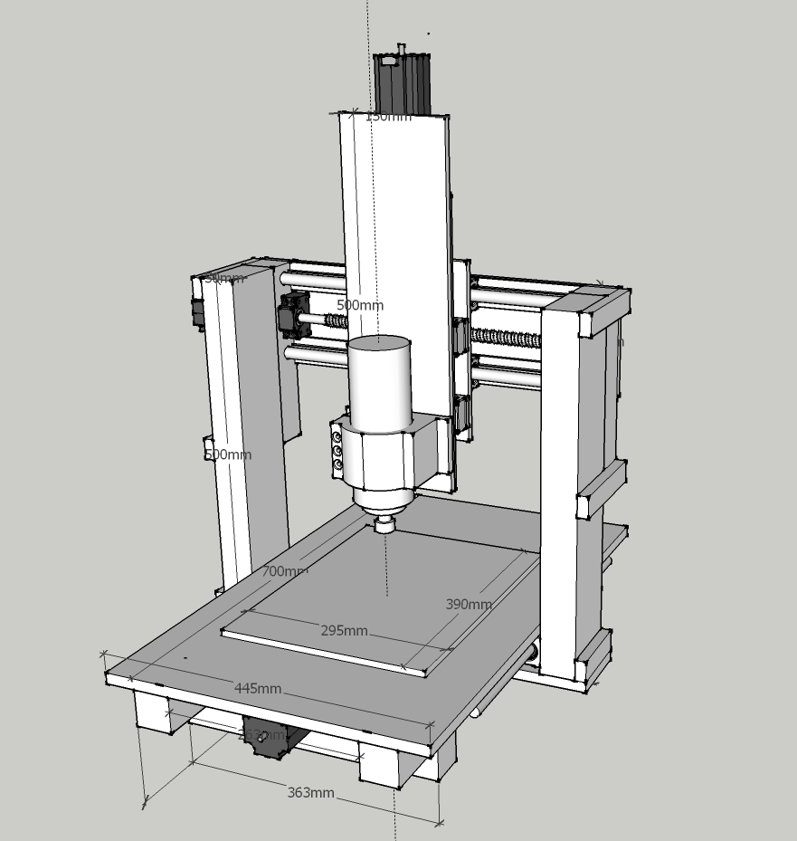
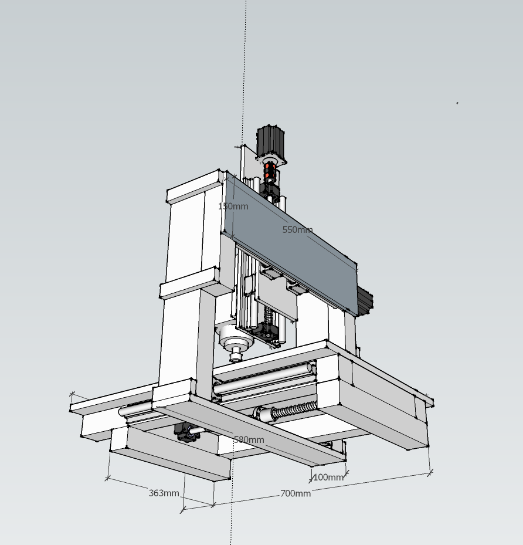
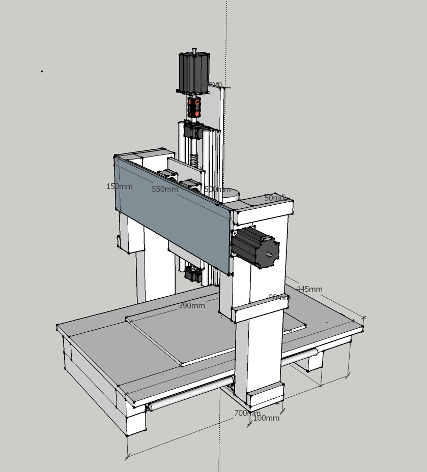
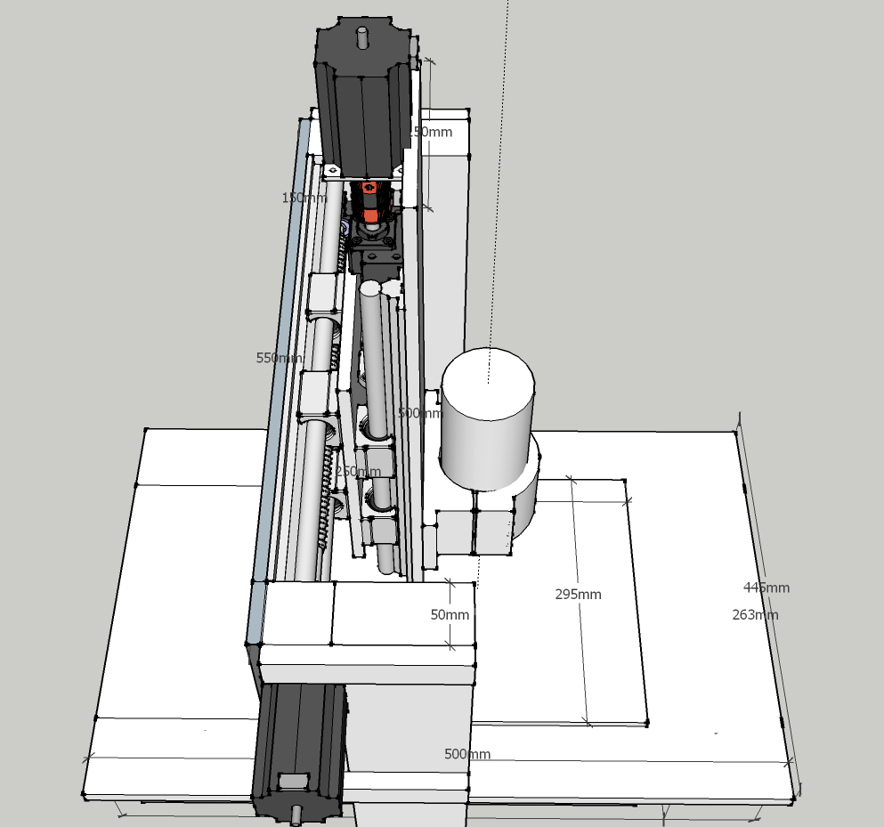

CNC Machine DIY Build - Design
Before buying anything I spent a good couple of months reading the forums on MYCNCUK and absorbing some of their knowledge, so thanks goes to the contributors there.
One of the first things to decide is what type of materials you will be milling. In my case that would be mainly softwoods, plastics and small aluminium parts for robotics and RC projects. There are many types of CNC mill but I decided to go with a gantry style design mainly because it looked like something I could build but also because it should be suitable for milling these materials.
I decided to go with an A3 sized work area as that should be large enough for most things that I would like to make. Also, if the work area was made much larger I would need to use dual ballscrews (or some other mechanism) for the long axis to avoid potential crabbing issues, incurring additional cost and increasing complexity. This really determined the size of the whole machine.
I used 10mm aluminium plate for the Y-axis and Z-axis for strength. For the remainder of the machine I chose 50mm x 50mm and 30mm x 15mm aluminium box section which I already had available so was cheap. In the future, I might make aluminium plate sides for the gantry if the box section ones prove too flexible.
After some research, I bought three of the 425oz Nema 23 stepper motors as these should be more than powerful enough for my requirements. These were matched with three M542 stepper drivers and a 36V PSU to drive them which fitted my budget. I also bought one of the cheap 5-axis parallel port breakout boards (BoB) from Ebay.
For a spindle, I decided to buy one of the 2.2KW water-cooled Chinese spindles and matching VFD. The spindles themselves seem to have a good reputation although the VFD electronics can apparently be flaky. These spindles accept ER20 collets which allows a flexible use of cheaper woodworking router bits.
I decided to go with supported linear rails as the additional cost did not seem to be that great considering the added strength. I bought a set of already machined 1605 ballscrews, bearings, ballnut housings and supported linear rails from this Chinese supplier. Unfortunately, it seems that this type of thing is not available economically from a UK supplier. They were delivered quickly and with reasonable customs charges and seem to be good quality parts although again YMMV.
My original design document from Sketchup is available here. I made a few design changes during the build but nothing significant.




Return to home page.